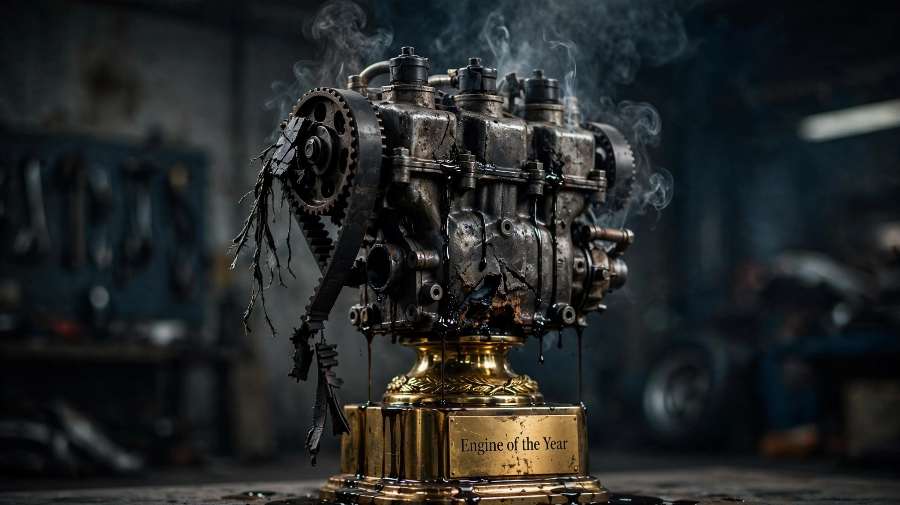

Ford's Most Decorated Engine Just Got Called an 'Unreasonable Safety Risk'

The Ford 1.0-liter EcoBoost three-cylinder won International Engine of the Year three consecutive times. It collected ten separate awards from the same competition. Ward's named it one of its 10 Best Engines, the first three-cylinder ever to make the list. More than 200 engineers across four countries spent over five million hours developing it. The turbocharger spun at 248,000 RPM. The engine block fit inside an airplane overhead bin.[1]
On August 3, 2026, NHTSA declared that same engine an "unreasonable risk to motor vehicle safety" and upgraded its investigation to an engineering analysis, the required regulatory step before the agency can compel a recall.[2] The affected vehicles: roughly 135,000 Ford Fiestas, Focuses, and EcoSports from model years 2014 through 2021, all equipped with the 1.0-liter powerplant. All three models are discontinued in the United States. Ford had no immediate comment.
The failure mechanism is elegant in its cruelty. The timing belt, which Ford's maintenance schedule says should be replaced at 150,000 miles, degrades internally. Fragments of belt material break off and flow downstream into the mesh oil pump pickup screen. The screen clogs. Oil pressure drops. The driver sees a warning light. Within an eighth of a mile, the engine seizes. One owner in Wilmington, Delaware described his 2017 Focus losing all power on a highway, the engine producing a sound "like a tank." NHTSA has 355 incident reports. Ninety-eight percent of failures occurred before the 150,000-mile replacement interval. The average failure mileage: 70,000.
That is not a maintenance failure. When 98% of your failures happen at less than half the recommended service interval, the maintenance interval itself is the defect. Ford engineers apparently calculated that the timing belt would survive 150,000 miles. The belt disagreed. And because the debris accumulates inside the oil pump screen rather than triggering any sensor upstream of the blockage, the warning comes too late. Drivers report oil pressure lights illuminating seconds before total loss of power. No gradual degradation. No check-engine light weeks in advance. Just a dashboard warning and then a mechanical corpse.
Ford's response: a "customer satisfaction program." Not a recall. The company is reducing the recommended belt replacement interval to 100,000 miles or six years and offering reimbursement to customers who already paid for engine repairs. Which is generous, except that 70,000-mile average failure point sits well below even the revised 100,000-mile interval. And a customer satisfaction program is voluntary; Ford decides who qualifies. NHTSA's engineering analysis could force a mandatory recall, which would cover every affected vehicle regardless of Ford's internal criteria.
FARS data provides the broader context. Over the decade from 2014 to 2023, the Ford Focus accumulated 3,046 fatalities at a rate of 2.52 deaths per 100 million vehicle miles traveled. The Fiesta recorded 513 deaths. The EcoSport added 86. Combined, the three platforms that shared the 1.0-liter engine saw 3,645 total fatalities.[3] Most of those deaths involved 2.0-liter models, not the 1.0L variant. But the EcoBoost equipped cars are concentrated in the 2014–2021 model year range, and any vehicle prone to sudden power loss at highway speed is a vehicle whose fatality data may worsen before it improves.
The orphan-vehicle dynamic makes this worse. Ford discontinued the Fiesta in 2019, the Focus in 2018 (for US production), and the EcoSport in 2022. There is no next-generation model to protect. No new-car sales revenue riding on brand trust. No showroom embarrassment from a recall notice taped to the window. The vehicles still exist in driveways, but Ford has moved on to trucks and EVs. NHTSA's investigation is, functionally, the last line of defense for 135,000 owners driving discontinued cars with a ticking timing belt.
The real takeaway sits in the gap between 70,000 and 150,000 miles. For a decade, Ford published a maintenance interval that was apparently wrong by a factor of two. Owners followed it. The belt failed anyway. And Ford's corrective action still sets the replacement interval 30,000 miles above the average failure point. If you own a 2014–2021 Ford Fiesta, Focus, or EcoSport with the 1.0-liter EcoBoost, do not wait for a recall letter. Do not trust the maintenance schedule. Get the timing belt inspected or replaced now, regardless of mileage. Check your VIN at nhtsa.gov/recalls and file a complaint if you have experienced sudden power loss.
Sources & References
- Ford Authority, “Ford 1.0L EcoBoost Wins ‘Engine Of The Year’” (reporting on 2012–2017 IEOTY awards). Also: Autoblog, “Ford 1.0-liter takes third-straight International Engine of the Year award,” June 2014; CarBuzz, “Ford's Little Inline-Three Is A Record-Breaking Award Winner,” February 2026.
- Reuters, “US says some older Ford cars, SUVs pose unreasonable safety risks,” August 3, 2026. reuters.com
- NHTSA, Fatality Analysis Reporting System (FARS), 2014–2023. nhtsa.gov. Combined fatality counts for Ford Focus (3,046), Ford Fiesta (513), and Ford EcoSport (86).
Limitations
FARS fatality data covers all Focus, Fiesta, and EcoSport models, not just 1.0L EcoBoost variants. The majority of US-market Focus vehicles used 2.0L or 2.3L engines; the 1.0L was a smaller subset. NHTSA's 355 incident reports represent power loss events, not fatalities directly attributed to the timing belt defect. The connection between sudden engine failure and crash fatalities is mechanistic (loss of power steering, loss of ability to accelerate out of danger) rather than directly measured in the current investigation. Ford's customer satisfaction program details and geographic coverage remain unclear as of this writing.